有一段话，全球约有三分之一的人对它非常熟悉甚至烂熟于心。
每一天有千万人会在心中默念它，将它当做自己生活的指引和生命中最大盼望。
它浸透着全球逾24亿人的信仰，它曾是牛顿投身科学研究的动力，是威伯福斯穷尽一生废除黑奴制度的理由，是五月花号41名清教徒进行美利坚合众国顶层设计的根基，也是无数宣教士勇敢面对死亡的力量。
这段话就是基督教（广义意义上的，包括新教、天主教、东正教）的主祷文。
今天，大虾就为大家盘点光影世界中的主祷文，一起体会电影里的信仰表达。
6
你好，疯子
豆瓣6.8
“千万不要吃药
你一吃药就证明你就是疯子”
六个人要离开疯人院，于是做出很多荒唐事来证明自己是个正常人。
但却遭到院方监控、味药以及电击。
其实，一个正常的人是不需要证明自己是正常的，只有精神病人才会拼命证明自己不是精神病。
原来，那六个人以及院长都是女主精神分裂出来的不同人格，电影通过具象化的疯人院以及七个性格迥异的人来表现女主内心世界的割裂与压抑。
当女主因此而处于巨大的痛苦和失控中时，主祷文成为她祈求摆脱困境的本能反应。
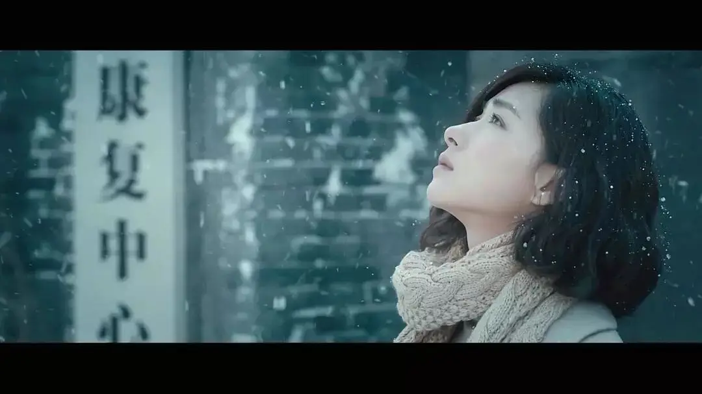
5
风 暴
豆瓣6.4
这是一部中规中矩的香港警匪片。
电影中有一个场景拍的非常感人。
唐强的卧底身份被发现后，本已逃脱的他，为了救女儿而返回家中，但却落入敌手。
眼看着可爱的女儿被悍匪伤害，被反绑的唐强却束手无策。
在最绝望的时刻，唐强和女儿想到了十字架上的耶稣，电影运用蒙太奇将死亡和信仰联系在一起。
死亡和痛苦让人感同身受了十字架上受苦的耶稣，而耶稣最终胜过死亡给了他们面对死亡的勇气和盼望。
在深邃悲悯的圣乐之下，唐强念着主祷文走向了死亡。
△《你好疯子》、《风暴》片段截取
4
深海浩劫
豆瓣7.0
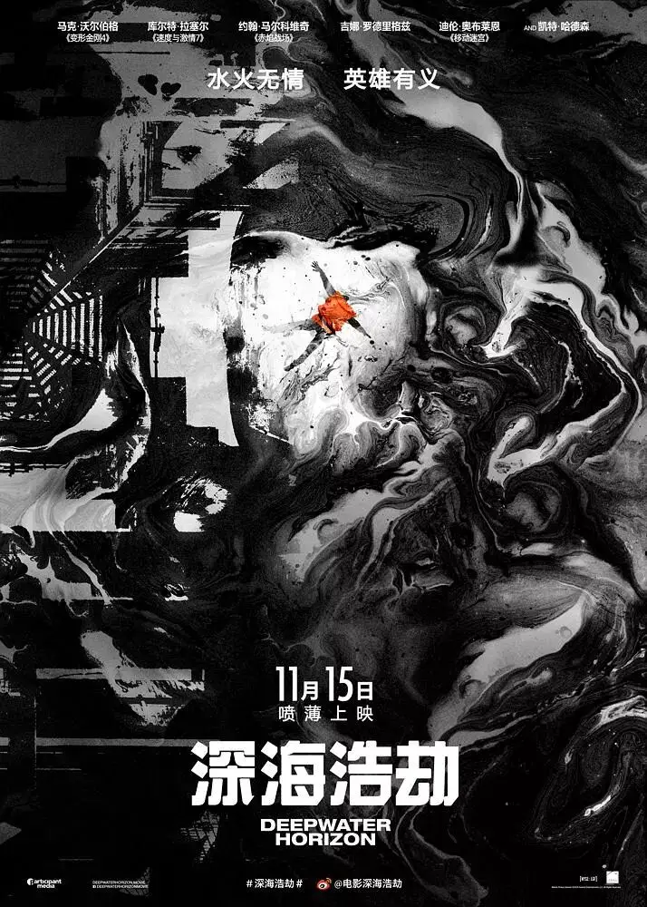
改编自2010年美国墨西哥湾原油泄漏事件。
电影较为真实地还原了整件事故的经过，电影情节和画面惊心动魄，尤其是视觉效果做的非常逼真，被提名当年奥斯卡最佳视觉效果奖。
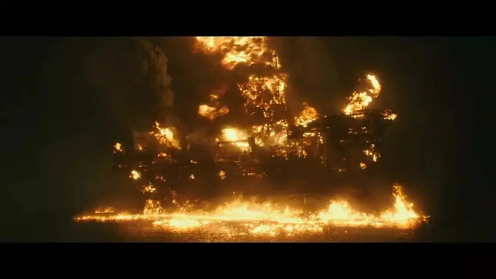
这是一件堪比“911”的严重事故，石油钻井平台井压不稳和压冲导致紧急安全系统失灵，随即引发连环爆炸。
随后，原油从深海喷涌而出变成冲天火柱，面对突如其来的灾难，工人们殊死一搏，纷纷跳下30米高的钻塔逃生。
最终，7人重伤、至少11人失踪。
从火海中死里逃生的工人们，有些人惊魂未定，有些人为同伴葬身火海而万分悲痛。
忽然一个人念起了主祷文，接着众人们纷纷下跪祈祷，既为自己能活下来感恩，也为同伴离去而哀悼，整个场面非常感人。
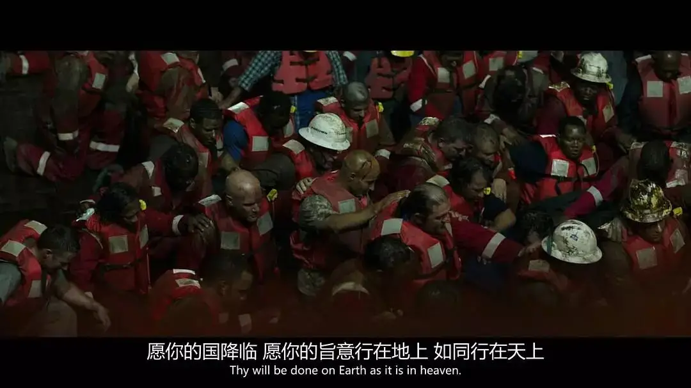
3
无畏上将高尔察克
豆瓣7.6
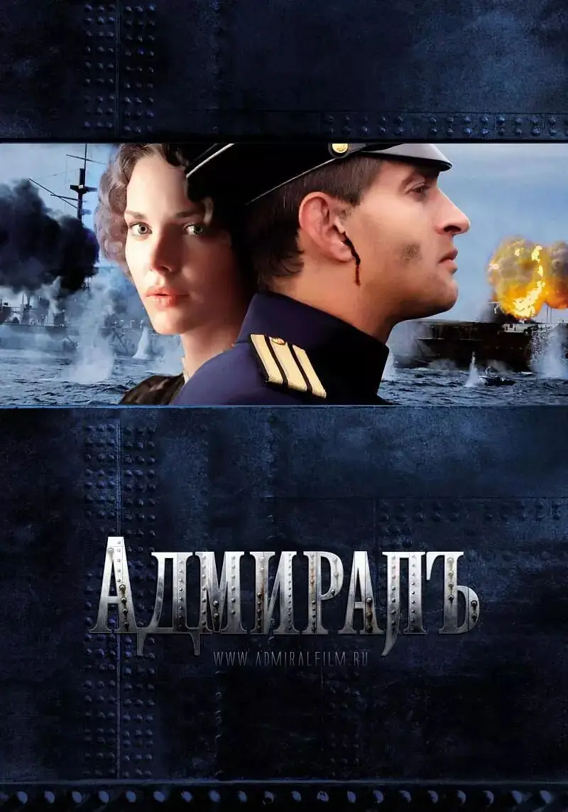
这是一部非常好看的俄罗斯电影，根据俄国传奇海军上将亚历山大•瓦西里耶维奇•高尔察克的故事改编而来。
他曾在日俄战争以及一战中表现出天才般的军事才能。
一战中，高尔察克任波罗的海舰队水雷总队队长，面对强大的德国海军，高尔察克就如天生的将才一般沉着指挥着自己的战舰，靠着大胆和冷静，以弱胜强凭着布雷舰炸沉了一艘德国的巡洋舰。
这部电影的开场就展示了这段传奇的海战，在绝境中，为了让德国战舰驶入自己的埋伏区，高尔察克指挥战舰驶入自己布的雷区。
其他人都认为这是自寻死路而悲观绝望，高尔察克却充满信心地告诉大家，上帝与我们同在。
于是，在最危难的时候，所有船员开始祈祷。
前面到处是鱼雷，后面有穷追猛打的德国战舰，他们用祷告最终创造了奇迹。
电影中的祈祷并不是主祷文，出于私心，大虾还是将这部作品推荐出来。
高尔察克是一个虔诚的东正教徒，在国家巨大变革面前，他有自己的想法。
显然，布尔什维克党容不下他这样的人。
十月革命爆发后，高尔察克奋力抗抗白色政权，不幸的是，他被同伙出卖，最终被苏维埃政权秘密处决。
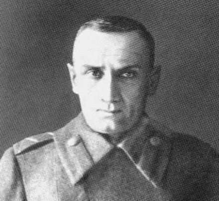
△生前最后的影像
按照我们所熟悉的套路，高尔察克被苏联妖魔化为反革命分子而遭到近百年的唾骂。
直至两千年后，高尔察克才得到平反，俄罗斯在圣彼得堡和伊尔库兹克分别建立了高尔察克纪念碑，甚至还有一个岛以他的名字命名。
这部电影不仅展现了高尔察克传奇而悲剧的一生，同时还着重刻画了他与爱妻索菲亚之间情比金坚却无奈生死相隔的爱情故事。
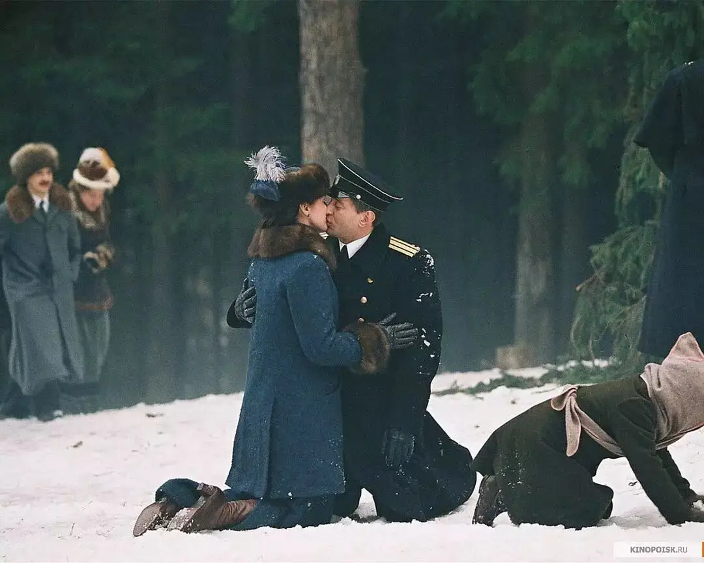
这些都在控诉着苏维埃的罪行。
恐怕那些“太阳”们怎么也想不到，当苏联即将走向末路的时候，才意识到从苏联人的生活中根除宗教的做法是完全错误的。
没有了信仰，苏联人的道德严重滑坡，以至于苏联在解体前不得不邀请美国基督教领袖前往莫斯科，为政府出谋划车挽救残局。
不过，苏联已经积重难返，1991年苏联还是走向解体。
1992年，当美国和加拿大的基督徒教师进入俄罗斯人的课堂时，俄罗斯人甚至将他们当作是“救世主”一样欢迎。
要知道，俄罗斯能有高尔察克，能有塔尔科夫斯基，能有列夫托尔斯泰，能有陀思妥耶夫斯基以及诺贝尔得主索尔仁尼琴，都因为他们背后的东正教信仰。
苏联的失败从理论和实践上让max主义彻底去见马克思了，读史难道不能使我们明智么！
2
人与神
豆瓣7.8
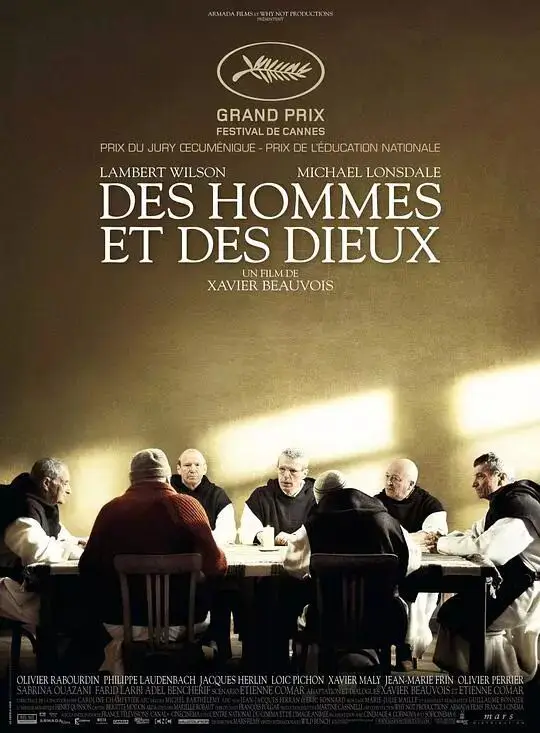
真实事件改编，第63届戛纳电影节获奖作品。
这是一部严肃探讨信仰的佳作，此前我曾力荐过（点击蓝字即可跳转文章）。
电影讲述了八位修道士的故事，他们身处伊斯兰世界，并热心服侍当年居民而深受大家的爱戴。
然而，极端伊斯兰的势力扩展到了这个地方，很多人被他们残忍杀害。
而天主教徒更是他们的眼中钉，面前难以预知的危险，修道士们究竟选择离开还是留下？
电影很真实地呈现了他们内心的挣扎和信仰上的软弱，有人害怕死亡，有人因不明白殉道的意义而悲观绝望。
他们犹豫徘徊，带着疑问和挣扎唱诗祷告，深刻思想了苦难、死亡、信仰以及伊斯兰的问题。
最终，他们都留了下来，并全部殉道。
电影中他们最后一次庆祝圣诞节的场景非常感人，导演用非常写意的慢镜头拍了他们一起领圣餐的过程，非常感人！
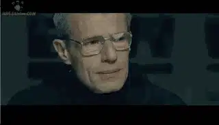

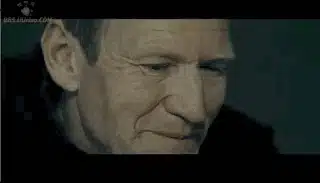
野花不会为了寻找阳光而移动，只因上帝的照料让它们不管在哪儿，都能够丰饶美丽。
因为信仰，因为基督，他们得享出人意料的平安和喜乐，也有了面对一切的勇气和盼望。
这个场景大虾真的很想剪出来让大家看一下，不过非常遗憾，只能大家自己去看了。
1
卡廷惨案
豆瓣8.2
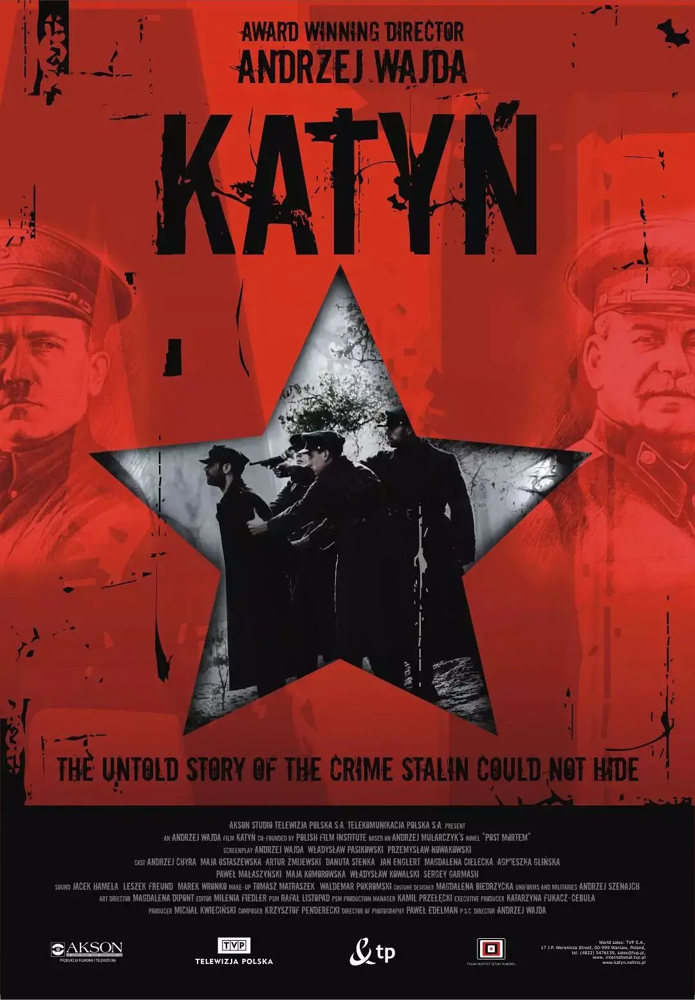
这是一个很可怕的历史。
在德国大肆屠杀波兰人的时候，苏联不但没有伸出援手，甚至趁虚而入，落井下石。
苏联从北边夹击波兰，大量波兰士兵被苏联俘虏。
1940年4月到5月，苏联对被俘虏的波兰人进行惨绝人寰的系统性屠杀。
遇害的人数约为22,000人。
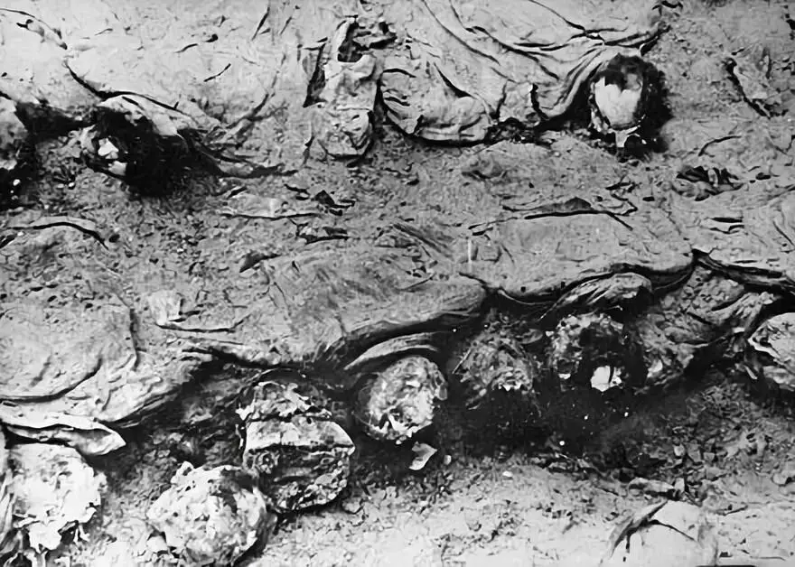
这些可不是普通人，而是经过苏联精心挑选的波兰精英。
苏联此前早已盯上了波兰，并将其看作是囊中之物。
为了奴役波兰，苏联借此屠杀了波兰的知识分子、医生、警察、公务员和神职人员，以断波兰的思想和信仰。
苏联的暴行恐怖至极，以至于出现犹太人反从波兰涌向德国边境的“奇观”。
当时驻守边境的德国士兵不得不高喊：“你们要往哪里去？你们不知道我们是要屠杀你们的吗？？”
当时的波兰是要多绝望！
而更加无耻的是，苏联竟然还不承认这场屠杀并嫁祸给德国。
从这一点上，宇宙真理国绝对是最邪恶、最卑鄙的国家，就是杀人不眨眼的希特勒和IS，人家也是敢作敢当！
直到苏联解体，叶利钦将惨剧密档的副本转交波方才真相大白。
在1992年10月14日举行的转交仪式上，波兰总统瓦文萨手接密档，语音嘶哑地说，他“感到全身颤抖”。
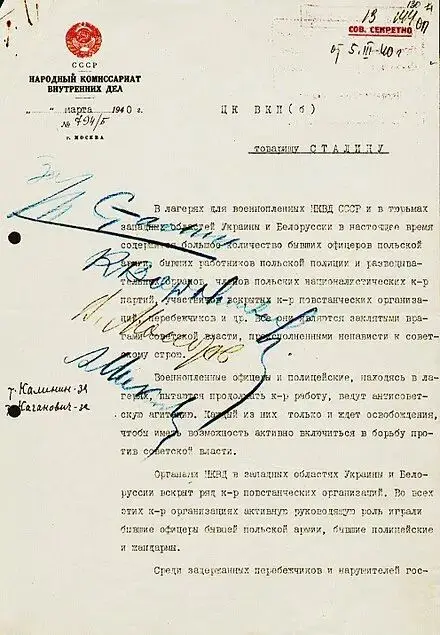
△拉夫连季·贝利亚在1940年3月5日给约瑟夫·斯大林的的文件备忘录中，提议处死波兰军官。
本片导演安杰伊·瓦依达的父亲也是这场屠杀的遇难者。
拍摄本片时，这位波兰电影之父已经是八十岁高龄，却依旧用坚强的毅力完成了电影拍摄，用电影展现了这场惨绝人寰的苦难。
这才是一个有良知、有社会责任和信仰的艺术家。
这部电影是瓦伊达留给波兰和世界的宝贵财富，它是每个人必须要看的作品，以认识人类的邪恶和疯狂可以到达何种地步！
在卡廷森林里，一个又一个波兰人被反捆着带到万人坑面前，随后就被苏联人从后脑勺一枪毙命。
电影里，面对令人窒息的死亡，波兰人被吓得双腿发抖、颤不成声，他们向上帝呼求，可是，残忍的苏联人竟然等不到波兰人将主祷文念完便开枪杀害。
于是，每个人只来得及说一句，接着另一个人继续说下一句，这个场景非常震撼。
苏联人以为这样可以彻底地毁灭波兰人的信仰和灵魂。
可惜他们错了，大错特错了。
那杀身体的不能杀灵魂，“主祷文”一句又一句地传递到了每一个波兰人的心中。
波兰人最终在祈祷中推倒了“耶利哥城”，率先打开了“白色野兽”的缺口。（推荐另一篇文章：这是一部绝不可辜负的佳作）
1989年波兰爆发团结工会大罢工，随后实行总统和议会制，同年改名为波兰共和国，后加入欧盟和北约。
波兰之后，柏林墙倒塌，罗马尼亚爆发革命，推翻了齐奥塞斯库政权25年的统治，其本人及其妻子则被枪决。
而罗马尼亚政府在处决了齐奥塞斯库夫妇后却宣布永久废除死刑。
1991年，苏联解体。
上帝欲让其灭亡，必先让其疯狂。
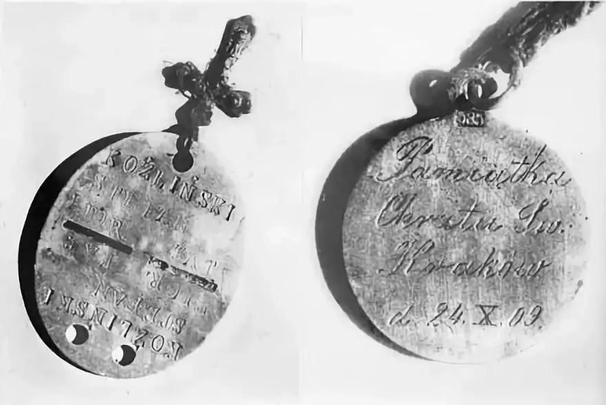
△从万人坑中发掘的军队身份识别牌和基督教奖章，上面的铭文是：“圣洗纪念，1909年10月24日，克拉科夫”
作为一个天主教国家，波兰的信仰经过了纳粹和苏联的试炼，他们活出了信仰的见证。
波兰如今很蒙上帝祝福，在欧洲被不断绿化的时候，波兰是其中难有的清醒者，波兰杜绝白左，杜绝世俗化和穆斯林，依旧手握十字架坚持信仰。
波兰让人尊敬！
波兰历史、波兰电影绝对是我们后面要深挖的宝藏。

滑动下方区域
查看主祷文
▼
我们在天上的父，
愿人都尊你的名为圣。
愿你的国降临，
愿你的旨意行在地上，
如同行在天上。
我们日用的饮食，
今日赐给我们。
免我们的债，
如同我们免了人的债。
不叫我们遇见试探，
救我们脱离凶恶。
因为国度，权柄，荣耀，全是你的，
直到永远。
阿门！
这里没有挑逗你眼目情欲的小鲜肉
也没有挑动你肉体情欲的段子
更没有膨胀你今生骄傲的鸡血
我们只在乎那些最质朴真诚的作品
在那里我们才能恢复真正的想象力
我们也坚信这才是我们真正需要的

ID:Six_hundred_hits
长按二维码，一键关注
【六百击】
-END-
电影评论
尽情分享朋友圈

苹果打赏通道
小提示：文末广告是腾讯配送广告，内容与本号无关，但您的每次点击（无需反复点）都会给平台带来几毛收益，欢迎您点击支持六百击。